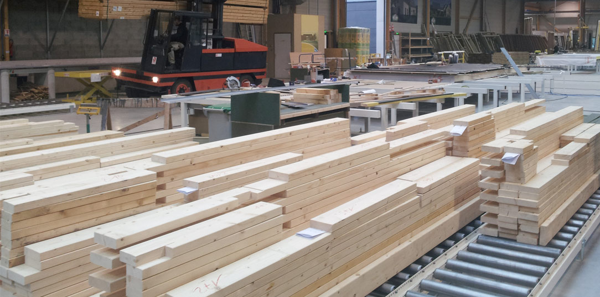

O NAMA
Primarna delatnost preduzeća GencoHome je izgradnja objekata od SIP panela.Imamo mogućnost gradnje Stambenih zgrada, kuća za stanovanje kao i objekata za odmor i rekreaciju, poslovnih zgrada, vrtića i drugih objekata. Prva godina postojanja nam je skoncentrisana na uslužnu gradnju objekata po sistemu ključ u ruke ili u sivoj fazi za fizička i pravna lica.
Naša gradnja se sastoji u nabavci osnovnih materijala od kojih naj pre u proizvodnoj hali vršimo proizvodnju SIP panela. Osnovni materijal je OSB ploča i ekstrudiranog polistirena (stiropora) od kog pravimo sendvič panel –SIP. Nakon izrade SIP panela u dimenzijama objekta za koji su namenjeni po projektu pristupa se gradnji. Osim gradnje objekata bavimo se i uslugama adaptacije i dogradnje već postojećih. U okviru preduzeća bavimo se i uslugama kupoprodaje nekretnina koja nam je omogućila ispitivanje tržišta i plasiranje naših gotovih objekata.

SIP PANELI - Budućnost gradnje
Šta su SIP paneli?
SIP (structural insulated panel) zapravo je termin koji na engleskom govornom području obeležava termoizolacione sendvič panele bilo kog tipa. Medutim, za razliku od našeg tržišta tamo se najcešce odnosi na panele od OSB-a sa ispunom od EPS-a, XPS-a ili poliuretana (nešto poput konstruktivnog "heraklita").
Strukturalno izolacioni paneli su osmišljeni u Americi tridesetih godina dvadesetog veka, a značajno su unapređeni i uspešno praktično primenjeni u prvoj deceniji novog milenijuma u ekstremnim klimatskim i raznovrsnim geografskim uslovima, najpre na zahtevnom kanadskom tržištu, a zatim i širom sveta. SIP paneli materijal budućnosti koji je u Srbiji dostupan tek par godina unazad.To je unapređena vrsta gotovih građevinskih panela za montažnu gradnju sa ugrađenom izolacijom koja nudi sve prednosti multifunkcionalnosti i jednostavnog koristenji uz pouzdanost i sigurnost gradnje
SIP standardi dati su i u Međunarodnom građevinskom propisu (International Building Code, APA, Plywood Design Specification 4—Design & Fabrication of Plywood Sandwich Panels for the design of SIPs). Međutim, ovaj dokument se pre svega odnosi na osnovne mehaničke osobine SIP elemenata ali ne i ostale karakteristike koje proizvođači SIP-a treba da postignu.
U dokumentu 2006 International Residential Code, koji važi od 2007. godine, date su detaljnije specifikacije, ali samo za SIP-ove koji služe za konstrukciju zidova. Kao glavna prednost gradnje SIP-om u odnosu na drvenu ramsku konstrukciju koja se zatim zatvara panelima, termoizolacijom, itd, istice se zaptivenost što u velikoj meri utice na uštede energije tokom životnog veka objekta. Takode, kao i kod metalnih sendvic panela, gradnja drvenim termoizolacionim sendvič panelima brza je i jednostavna.
Šta i kako je SIP panel napravljen?
Reč SIP predstavlja strukturalnu izolacionu ploču. Ovaj građevinski materijal je konstrukcija od tri sloja: dve ploče OSB i sloj ekspandiranog stiropora u sredini. Sa upotrebom poliuretanskog lepka, pod pritiskom od 18 tona, ove komponente su međusobno povezane. Paneli se proizvode u dva tipa: zid i pod.
Tehnologija je u suštini zalepiti između dva lista OSB (orijentirana cjedilu -. Engl OSB) Polistiren blokova PSB-C-25 gdje je C - gašenje, i 25 - gustoća (od 15 do 25 kg / m3). Njegova debljina varira od 100 do 200 mm, zavisno od vrste konstrukcije i klimatske zone u kojoj je postavljena. Takođe, tanji paneli mogu se koristiti za konstrukciju pregrada u kućištu od SIP panela. Na konturi panela nalaze se žljebovi za povezivanje i pričvršćivanje šipki. Mora se reći da je panel sa 100 mm izolacije toplotne provodljivosti odgovaraju na oko metar zida korpulentni pečene gline cigle, ali sada je sadašnji ruski standardi za srednji bend je potrebno 120 mm stiropor. Prema tome, većina proizvođača SIP panela nudi standardne proizvode sa 140 mm PSB- C-25 i debljinom OSB od 10-12 mm.
Drveni termoizolacioni konstruktivni sendvič paneli mogu imati više uloga u konstrukciji objekta - zidovi, podovi, krovovi, pa čak i temeljni zidovi. Takođe, oni predstavljaju i barijeru